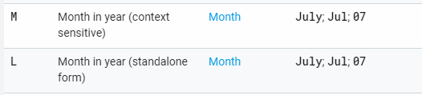

Introduction
Using SimpleDateFormat to format dates and times is a common thing (as Java 8 Time API is not that available on Android yet). Usually it looks like:
val formatter = SimpleDateFormat("dd MMMM yyyy", Locale.ENGLISH)
formatter.format(date)
We can use different formats and locales with not only providing correct translations, but also some additional locale-specific formatting rules.
One tricky thing about SimpleDateFormat formats is why we have M and L when they look identical?

As it is stated in documentation M means “context sensitive” and L — “standalone form”. To better understand what does it mean let’s run few tests.
M vs L
In this article we’ll use this list of formats:
final String[] formats = {
"MMMM",
"LLLL",
"dd MMMM",
"dd LLLL",
"MMMM yyyy",
"LLLL yyyy",
"dd MMMM yyyy",
"dd LLLL yyyy",
"dd MMM",
"dd LLL"
};
If we check Locale.ENGLISH for these formats we’ll get the following results:
locale: en
==================
MMMM : July
LLLL : July
dd MMMM : 20 July
dd LLLL : 20 July
MMMM yyyy : July 2019
LLLL yyyy : July 2019
dd MMMM yyyy: 20 July 2019
dd LLLL yyyy: 20 July 2019
dd MMM : 20 Jul
dd LLL : 20 Jul
No difference between M and L!
If we check another locale, for example, Locale.GERMAN we again won’t see any difference:
locale: de
==================
MMMM : Juli
LLLL : Juli
dd MMMM : 20 Juli
dd LLLL : 20 Juli
MMMM yyyy : Juli 2019
LLLL yyyy : Juli 2019
dd MMMM yyyy: 20 Juli 2019
dd LLLL yyyy: 20 Juli 2019
dd MMM : 20 Jul
dd LLL : 20 Jul
Does it mean that we can use M and L in formats interchangeably?
Not really. It just happens so that on English and German we get same results. Let’s check other locales from different language groups, for example Russian:
locale: ru
==================
MMMM : Июль
LLLL : Июль
dd MMMM : 20 июля
dd LLLL : 20 Июль
MMMM yyyy : июля 2019
LLLL yyyy : Июль 2019
dd MMMM yyyy: 20 июля 2019
dd LLLL yyyy: 20 Июль 2019
dd MMM : 20 июл
dd LLL : 20 Июль
And we now see different results, though they are in Russian and we need some additional explanation on what we’ve got. Let’s check examples one by one.
-
When using MMMM and LLLL we got same result, so nothing interesting here.
-
The result of dd MMMM : 20 июля actually can be translated to English as 20th of July. And it is correct form. And dd LLLL : 20 Июль can be translated as 20. July.. It sounds weird and not correct grammatically.
-
The result of MMMM yyyy : июля 2019 is something like of July 2019 which is not correct. In contrary LLLL yyyy : Июль 2019 is month name followed by year July 2019 and it is good.
-
dd MMMM yyyy case is basically same as second case.
-
The last example is similar to the second case, the difference only that with MMM we got correct shortened month name, while with LLL we got the full name of the month and it again looks weird.
So if we look at examples and add ticks to correctly formatted dates, we’ll figure out the idea:
locale: ru
==================
MMMM : Июль (+)
LLLL : Июль (+)
dd MMMM : 20 июля (+)
dd LLLL : 20 Июль
MMMM yyyy : июля 2019
LLLL yyyy : Июль 2019 (+)
dd MMMM yyyy: 20 июля 2019 (+)
dd LLLL yyyy: 20 Июль 2019
dd MMM : 20 июл (+)
dd LLL : 20 Июль
The rule is basically the following:
-
if you want to format date to have day and month (i.e. format with context) — then you should use M.
-
if you want to format month only or month without day (i.e. format standalone form) — then you should use L.
Conclusion
Of course if your app supports only English locale you might not think about such a things. But still it is good to know what exactly should be used in which case so that if one day you decide to add e.g. Russian locale support — everything will be fine.
Such behavior actually applicable not only to Russian locale, but for most of the Slavic languages at least.
Keep that in mind and keep your translations clean.
Happy coding